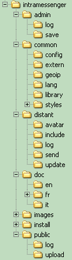

Avant propos
Tout d'abord merci de votre intérêt pour IntraMessenger.
Pour plus d'informations sur les options serveur, consultez aussi l'impact visuel sur les postes clients.
Système requis
Il faut disposer d'un serveur web (mutualisé ou dédié) équipé de PHP et MySQL (serveur dit LAMP ou WAMP).Exemple pour Windows : installer WampServer ou EasyPhp ou Xampp (voir la doc au format pdf fournie dans /doc/fr/).
1. Mettre à jour une version antérieure d'IntraMessenger
L'historique des modifications est disponible dans le fichier /doc/fr/versions.html et plus détaillée sur le forum officiel (ou sur twitter).- Activer le mode maintenance (cocher et enregistrer, ou option _MAINTENANCE_MODE non vide : dans le fichier des options).
- Attendre 5 minutes.
- Effectuer une sauvegarde de la base de données via phpMyAdmin (ou équivalent).
- Répertoires à sauvegarder :
- /common/config/ : configuration actuelle (options et paramètres de connexion à MySQL)
- /distant/avatar/ : les avatars
- /distant/log/ : journaux d'événements utilisateurs
- /admin/log/ : journaux d'événements de l'administrateur
- Renommer le répertoire actuel d'IntraMessenger pour sauvegarder temporairement les fichiers (ex: /intramessenger.sav/).
- Dézipper l'archive intramessenger.zip, téléchargée sur depuis le site officiel
- Transférer son contenu (ex: via FTP) dans le répertoire du serveur web (http) contenant IntraMessenger.
- Restaurer les répertoires :
- /common/config/
- /distant/avatar/
- /distant/log/
- /admin/log/
- Renommer le répertoire /admin/
- Important !
Aller à la page /admin/check.php (via le navigateur) et vérifier que tous les paramètres sont corrects (verts), dont :
- les nouvelles options sont présentes.
- la modification de la structure des tables.
- Enregistrer les options.
- Supprimer le répertoire /install/
- Désactiver le mode maintenance (décocher ou vider l'option _MAINTENANCE_MODE).
-
Une fois l'installation terminée et après s'être assuré que la nouvelle version fonctionne correctement,
supprimer le répertoire /intramessenger.sav/.
2. Installer IntraMessenger pour la première fois
Les débutants consulteront la documentation d'installation (au format pdf) : installation_im_serveur_debutant.pdf.- Dézipper l'archive intramessenger.zip, téléchargée depuis le site officiel, dans le répertoire racine (/www/ ou autre) du serveur web (HTTP).
- Si possible, créer une base de données dédiée (ex: 'IntraMessenger').
- Commencer l'installation en allant à la page /install/install.php (via le navigateur web) et suivre les instructions.
- Renommer ou supprimer le répertoire /install/.
- Renommer le répertoire /admin/ (sinon, par mesure de sécurité, ).
- Vérifier que les permissions (chmod) sont suffisantes sur les répertoires : /distant/log/ - /distant/avatar/ - /public/log/ - /public/upload/ !
- Pour finir l'installation : désactiver le mode maintenance (vider l'option _MAINTENANCE_MODE).
Informations complémentaires et conseils
- En intranet (principalement et sauf DHCP ou proxy) : renommer /common/acces.inc.chekip.php en /common/acces.inc.php
afin que l'adresse IP de chaque utilisateur soit systématiquement vérifiée (meilleure sécurité).
- Gestion de la censure des messages (liste de mots (gros mots) remplacés par "...") dans le fichier : /common/config/censure.txt
(uniquement si option _CRYPT_MESSAGES non activée).
- Si vous n'arrivez pas à configurer votre serveur, vous pouvez toujours faire des essais du logiciel "client" en utilisant comme url (paramètre demandé au démarrage) :
http://www.theuds.com/intramessenger/ (serveur de tests).
Si vous ne voulez pas installer de serveur, vous pouvez utiliser l'url (adresse) : http://www.intramessenger.com/demo/
En cas de lenteurs depuis les postes clients lire ici (FAQ).
Authentification externe/tierce
Il est tout à fait possible d'effectuer l'authentification via un serveur (base de données MySQL) :-
phpBB,
vBulletin,
Phorum,
Joomla,
PHP-Nuke,
eGroupWare,
dotProject,
Ovidentia,
Dolibarr,
Phenix-Agenda,
SMF,
Achievo,
TaskFreak,
IP-Board,
WebCollab,
PHP-Fusion,
Xoops,
MyBB,
phpGroupWare,
SugarCRM,
vtigerCRM,
Drupal,
Typo3,
Mambo,
Nucleus,
MODx,
Streber,
TikiWiki,
PHProjekt,
Toutateam,
AEF Board,
FUDforum,
miniBB,
Owl,
PunBB,
VCalendar,
WebCalendar,
UCenter (Discuz!),
Agora-Project,
Collabtive,
Group-Office,
CuteFlow,
Concrete5,
Dotclear,
ProjectPier,
Bitweaver,
WordPress,
IssueManager,
activeCollab,
eZ Publish,
Elgg,
YACS,
Contao,
Triade,
phpCollab,
Feng Office,
Trellis Desk,
PHPBoost,
OBM,
Burning Board,
Claroline,
CMS-Made-Simple,
CMS-Made-Simple,
Connectix-Boards,
Dokeos,
e107,
FluxBB,
GEPI,
ImpressCMS,
Malleo,
Moodle,
PMS,
phpBMS,
PHPizabi,
Pligg,
Prométhée,
XMB-Forum,
Prestashop,
osCommerce,
HESK,
Tine,
SiT!,
SPIP,
phpMyFAQ,
68KB,
Admidio,
Feng Office,
Adheo,
phpFoX,
todoyu,
Thelia,
Sharetronix,
NPDS,
Vanilla,
osTicket,
OneOrZero AIMS,
MantisBT,
Lodel,
PHPDug,
b2evolution,
Artiphp,
web2Project,
SocialEngine,
Nuked-Klan,
Docebo,
WebsiteBaker,
CS-Cart,
LiveCart,
ZenCart,
TomatoCart,
Magento,
FrontAccounting,
Geeklog,
The Bug Genie,
epesi-BIM,
Freeway,
Dolphin,
WebIssues,
ProjeLead,
StatusNet,
Chamilo,
ATutor,
osCMax,
Mahara,
SimpleGroupware,
BeWelcome-Rox,
pragmaMx,
Textpattern,
Zikula,
Open-Realty,
Coppermine Photo Gallery (cpg),
Help Center Live,
phpwcms,
eTraxis,
Friendika,
Bonfire,
PCPIN-Chat,
DManager,
ocPortal,
SilverStripe,
Zazavi,
phpScheduleIt,
PyroCMS,
Mound,
Cotonti,
Dragonfly-CMS,
aphpKb,
qdPM,
BIGACE,
Kimai,
Etano,
PBBoard,
Serendipity,
Question2Answer,
Oxwall,
Traq,
ProjeQtOr,
Fire Soft Board,
Galette...
Veuillez consulter authentification_externe.html.
Photos ou avatars
Placez les photos des utilisateurs dans le répertoire /distant/avatar/, avec comme nom de fichier : pseudo.jpgL'administrateur peut aussi remplacer les avatars.
Si l'option est activée, les utilisateurs peuvent proposer de nouveaux avatars (validés par l'administrateur avant de pouvoir être utilisés).
Annuaire des serveurs IntraMessenger publics
Vous pouvez vous inscrire sur l'annuaire des serveurs publics IntraMessenger sur internet : http://www.intramessenger.net/list/servers/Voir /admin/register_to_public_servers_list.php
- renseigner : _IM_ADDRESS_BOOK_PASSWORD (sera demandé lors de l'inscription)
- activer : _ALLOW_AUTO_ADD_NEW_USER_ON_SERVER
- laisser vide : _PASSWORD_FOR_PRIVATE_SERVER et _ENTERPRISE_SERVER
Contenu des répertoires
- /admin/ (à renommer et/ou protéger !) contient l'interface admin ACP.
- /admin/log/ journal d'évenements (logs) d'éventuels d'erreurs, ainsi que l'activité (ex: suppression, validation de comptes...) de l'administrateur.
- /admin/save/ vos sauvegardes.
- /common/ scripts communs.
- /common/config/ fichiers de configuration (à sauvegarder avant de mettre à jour !).
- /common/extern/ scripts d'authentification externe.
- /common/lang/ traductions.
- /common/library/ librairies externes : scripts de géolocation pour les connexions sur internet (GeoIP.dat à mettre à jour tous les mois).
- /common/styles/ styles (css et images).
- /distant/ les scripts appelés depuis les postes clients.
- /distant/avatar/ contient les photos (ou avatar) des utilisateurs (si l'administrateur y place des photos/images).
- /distant/include/ : scripts appelés indirectement (via /distant/action.php) depuis les postes clients.
- /distant/log/ logs (journaux) de connexions et d'erreurs.
- /distant/send/ images que l'ont peut envoyer (en tant qu'administrateur) aux utilisateurs.
- /distant/update/ contient les mises à jour du client (pour les mises à jour "depuis le serveur").
- /doc/fr/ c'est ici... n'oubliez pas de lire versions.html avant/après chaque mise à jour !
- /install/ scripts d'installation et de mise à jour de la structure des tables (à renommer après installation).
- /public/ permet aux postes clients de consulter les options du serveur (si l'administrateur ne supprime pas ce répertoire).
- /public/log/ journal d'évenements (logs) des propositions d'avatars.
- /public/upload/ avatars proposés, en attente de validation par l'administrateur.
Informations
-
Forum officiel : http://www.intramessenger.com/forum/
N'hésitez pas à venir y proposer vos améliorations et suggestions ainsi que vos traductions.
-
Support : http://www.intramessenger.net/contact.php?lang=FR&
- Les mises à jours (nouvelles versions) du serveur ont lieu deux fois par an (vers septembre et janvier environ).
Consulter la liste des nouveautés ainsi que la liste des prochaines améliorations (sur internet).